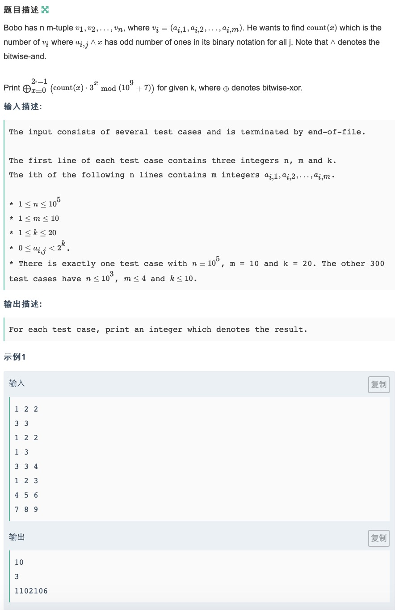
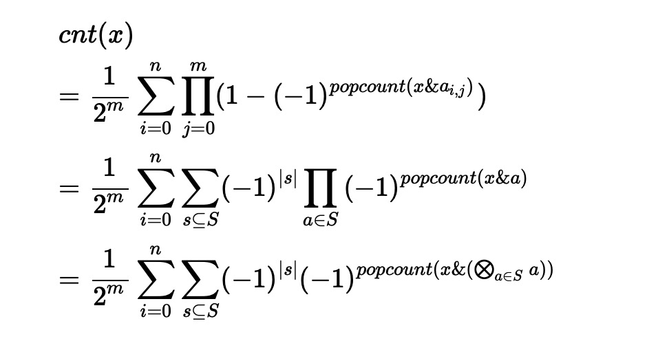

简单化简一下要我们求的东西

其实这个就是异或卷积fwt的定义，把前两个求和合成一个求和，用-1的|S|次方构造原数列，跑一次fwt就是答案
#include<bits/stdc++.h>
using namespace std;
int sum[1<<10],cnt[1<<20];
int mod=1e9+7;
int qpow(int a,int b){
int ret=1;
while(b){
if(b&1) ret=1ll*ret*a%mod;
a=1ll*a*a%mod;
b>>=1;
}
return ret;
}
//求卷积a[]=>fwt(n,0)=>fwt[]=>fwt(n,1)=>a[]
//fwt(x$y)=fwt(x)*fwt(y);$代表|，&，^
void fwt(int *a, int n, int f) {
for (int k = 1; k < n; k <<= 1)
for (int i = 0; i < n; i += (k << 1))
for (int j = 0; j < k; j++)
if (f == 1) {
int x = a[i + j], y = a[i + j + k];
//&:a[i+j]+=a[i+j+k];
//|:a[i+j+k]+=a[i+j];
a[i + j] = x + y;
a[i + j + k] = x - y;
} else {
int x = a[i + j], y = a[i + j + k];
//&:a[i+j]-=a[i+j+k];
//|:a[i+j+k]-=a[i+j];
a[i + j] = (x + y) / 2;
a[i + j + k] = (x - y) / 2;
}
}
int main(){
ios::sync_with_stdio(false);
int n,m,k;
while(cin>>n>>m>>k){
for(int i=0;i<1<<k;i++) cnt[i]=0;
for(int i=0;i<n;i++){
int a[10];
for(int j=0;j<m;j++) cin>>a[j];
for(int s=0;s<1<<m;s++){
if(s!=0) sum[s]=sum[s&(s-1)]^a[__builtin_ffs(s)-1];
if(__builtin_parity(s)) cnt[sum[s]]--;
else cnt[sum[s]]++;
}
}
fwt(cnt,1<<k,1);
int ans=0, rev=qpow(1<<m,mod-2),mul=1;
for(int i=0;i<1<<k;i++){
ans^=1ll*mul*cnt[i]%mod*rev%mod;
mul=3ll*mul%mod;
}
cout<<ans<<endl;
}
}